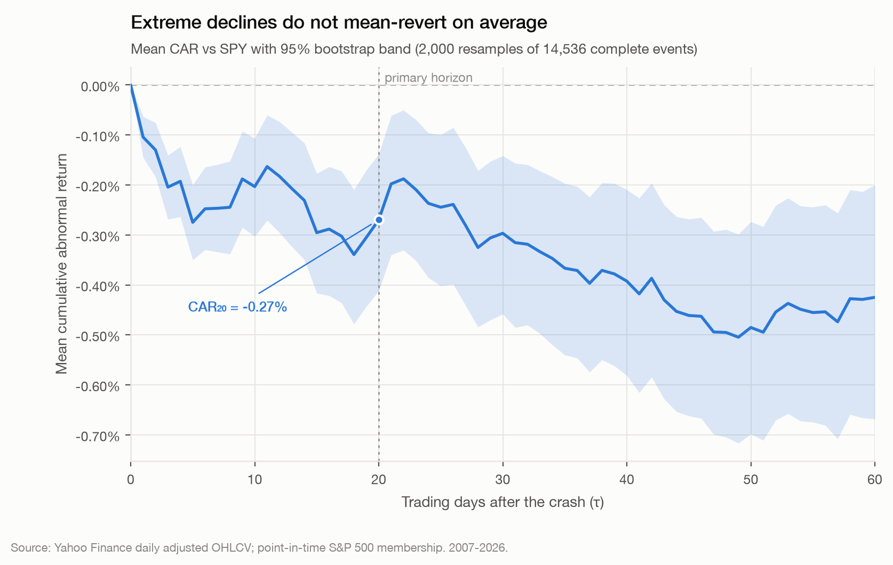
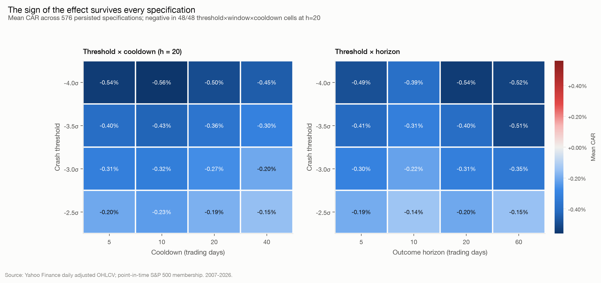
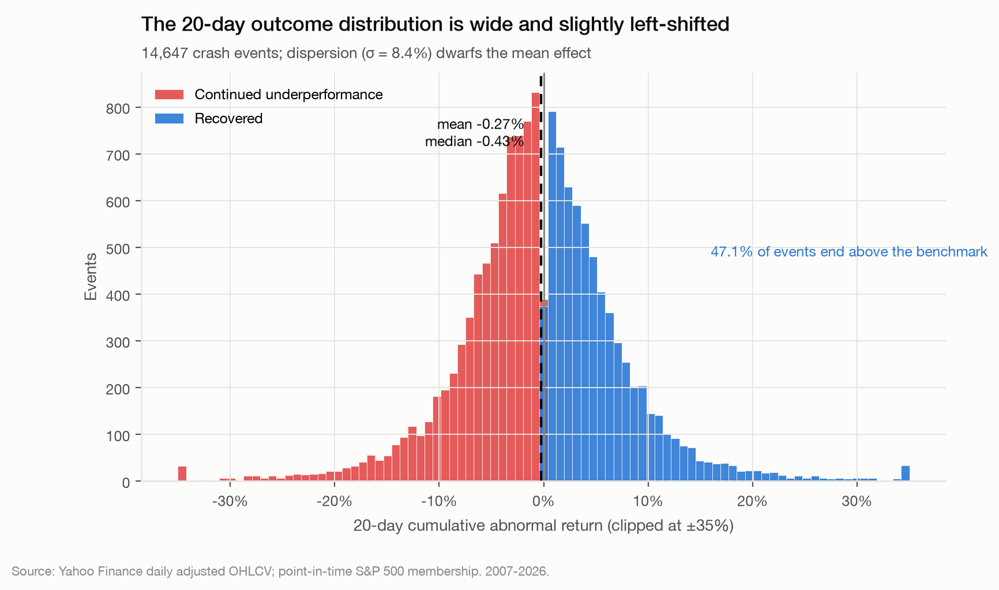
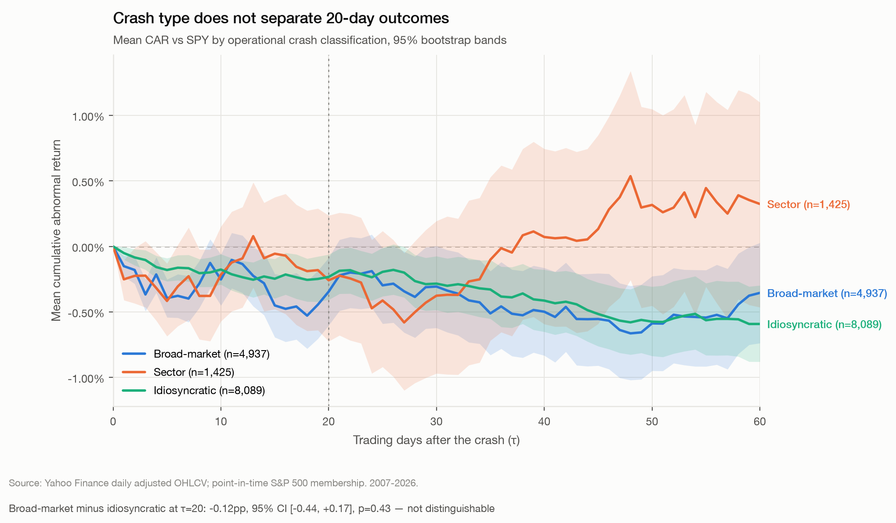
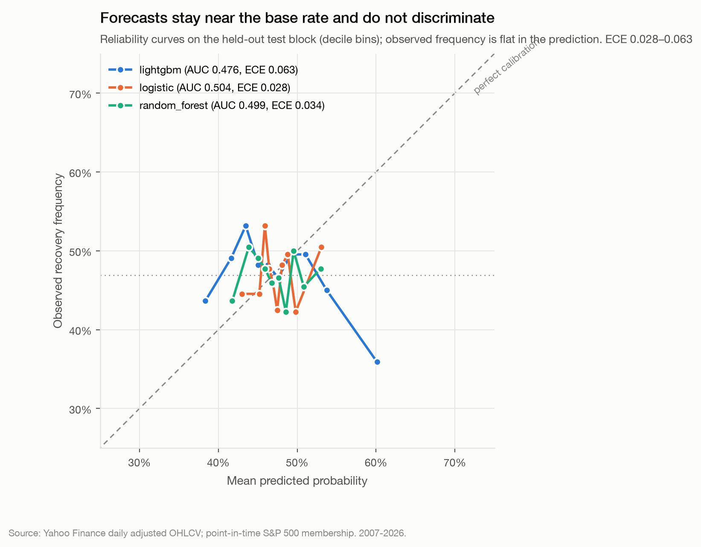
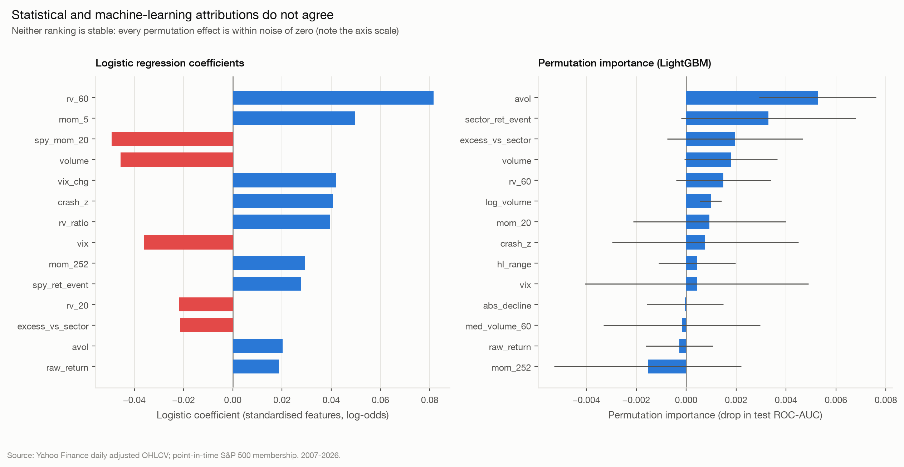

Quantitative research · Event study
When extreme stock selloffs reverse—and when they keep falling
Using 14,678 extreme one-day declines among point-in-time S&P 500 constituents from 2007–2026, this study tests whether severe stock crashes systematically mean-revert, and whether observable event-time features distinguish rebounds from continued underperformance.
There is no average dead‑cat bounce.
We estimate a mean 20-day cumulative abnormal return against SPY of −0.265% (95% bootstrap CI [−0.403%, −0.124%], n = 14,647). Mean CAR is negative at every horizon from 1 to 60 trading days.

| Horizon | Mean CAR | 95% CI |
|---|---|---|
| 1d | −0.101% | [−0.141%, −0.064%] |
| 5d | −0.268% | [−0.342%, −0.192%] |
| 10d | −0.187% | [−0.283%, −0.089%] |
| 20d | −0.265% | [−0.403%, −0.124%] |
| 60d | −0.425% | [−0.658%, −0.200%] |
This is not a trading signal. No transaction costs, borrow costs or capacity constraints are modelled. A −0.27% mean inside a 8.4% standard deviation is a statistical displacement, not an edge.
Daily split- and dividend-adjusted OHLCV, with S&P 500 membership reconstructed point in time — the current constituent list rolled backwards through the index change log — so a stock is eligible for event detection only on dates it actually belonged to the index.
A crash is a day on which a stock's return falls at least three standard deviations below its own trailing 60-day distribution, with mean and volatility estimated from observations strictly preceding the event. A 20-trading-day ticker-specific cooldown collapses each episode to its first day, so consecutive breaches are not counted as independent observations.
The result does not depend on how a crash is defined. Across 576 persisted specifications — crash threshold × volatility window × cooldown × outcome horizon × high-VIX definition — mean CAR20 is negative in 48 of 48 threshold × window × cooldown cells, and the recovery rate is below 50% in 48 of 48.

The average effect is modestly negative. The variation around it is enormous: the standard deviation of CAR20 is 8.4% against a −0.27% mean — roughly thirty times the central tendency. Almost every individual crash resolves dramatically better or worse than the average.

Five hypotheses were pre-registered before estimation. Four failed, and they are reported as written.
| Hypothesis | Result | |
|---|---|---|
| H1 | Extreme declines do not universally mean-revert | Supported |
| H2 | Broad-market crashes recover differently from idiosyncratic | Not supported (p = 0.43) |
| H3 | Abnormal volume contains information | Suggestive, insufficient (q = 0.14) |
| H4 | Pre-crash momentum matters | Not supported (p = 0.478) |
| H5 | Market volatility changes the relationship | Not supported (p = 0.57) |

Three model families were trained to classify whether an event would end above the benchmark, using chronological splits with a 20-trading-day embargo between blocks. Hyper-parameters were chosen on validation only; the test block was scored once.
| Model | Test ROC-AUC | Brier | Brier skill | Accuracy |
|---|---|---|---|---|
| Logistic regression | 0.504 | 0.2496 | −0.002 | 0.524 |
| Random forest | 0.499 | 0.2499 | −0.003 | 0.516 |
| LightGBM | 0.476 | 0.2564 | −0.030 | 0.493 |
| Constant base rate | 0.500 | 0.2490 | −0.000 | 0.531 |
Out-of-sample discrimination is indistinguishable from chance, and all three models have negative Brier skill — each is fractionally worse than predicting the training base rate for every event. The constant base-rate model also has the highest accuracy while making the same prediction every time, which is precisely why accuracy is reported last.

Logistic coefficients, permutation importance and SHAP each rank a different feature first. Disagreement among interpretation methods, combined with chance-level predictive performance, is consistent with unstable feature ranking over noise rather than with real signal the models failed to exploit. Attributions extracted from a model with 0.476 test AUC describe what an uninformative fit latched onto in-sample; they are not substantive economics.

0 of 32 exploratory coefficients survive correction.
Pooling every exploratory coefficient from the extended OLS and logistic models into a single Benjamini–Hochberg family, none survives at q ≤ 0.05.
This is the study's most important statistical guard. Read without correction, the exploratory models offer several coefficients at nominal p < 0.05 — a tempting set of “findings”. But 32 tests against a near-null outcome are expected to produce roughly that many false positives by construction. Reporting them would have been an artefact of the number of tests performed rather than evidence about markets.
The same logic governs abnormal volume. Its nominal p of 0.028 becomes q = 0.14 after correction. The sign is directionally consistent in 97.9% of specifications, which makes it a genuine lead — but the honest description is suggestive but statistically insufficient, not that volume predicts recovery.
Before any analysis, two screens removed 54 tickers, each rejection manually inspected. Both drop whole tickers rather than winsorising individual returns, because the defect is series identity: when a price history is structurally inconsistent or represents more than one security, winsorising extreme returns does not repair the problem — it launders it into plausible-looking numbers.
SBNY returns a listing
beginning 17 months after Signature Bank failed, with no overlap against the symbol's
recorded index membership.TIE's history interleaves economically incompatible price series under one
symbol, alternating day to day between roughly $14 and roughly $8,000. COL
shows quantised prices of $0.20–$0.85, inconsistent with Rockwell Collins's known
trading range of $60–$140.Before screening, mean CAR20 computed to +77.7% with a standard deviation near 58. That is not a research result — it is a data-quality failure found during audit. Six corrupt events on two tickers were overwhelming fourteen thousand real ones.
An early version of the screen used an absolute price-level rule and incorrectly flagged legitimate NVDA history, whose split-adjusted median close over the window is $0.80. Absolute price thresholds are unsafe in adjusted data because splits, scale changes and genuine high-growth securities all produce legitimately tiny early prices. The corrected rules test internal time-series consistency instead — round-trip level discontinuities, extreme-move frequency and value diversity — none of which depend on where a price sits in absolute terms.
Every number on this page is read from persisted result files at build time, so the presentation cannot drift from the analysis. The page itself runs no computation.
git clone https://github.com/Gariyuuu/dead-cat-detector
cd dead-cat-detector
make setup # uv venv (Python 3.12) + dependencies
make verify # check all 42 documented claims against persisted results
make test # 43 tests, no network required
make analysis # rebuild every analysis stage from cached data
make all # full pipeline including the data downloadAll randomness is seeded, and a config fingerprint is stamped into every persisted result. The test suite is concentrated on the leakage surface; its load-bearing case mutates every return from the event date onward and asserts the rolling statistics that define the crash are unchanged.